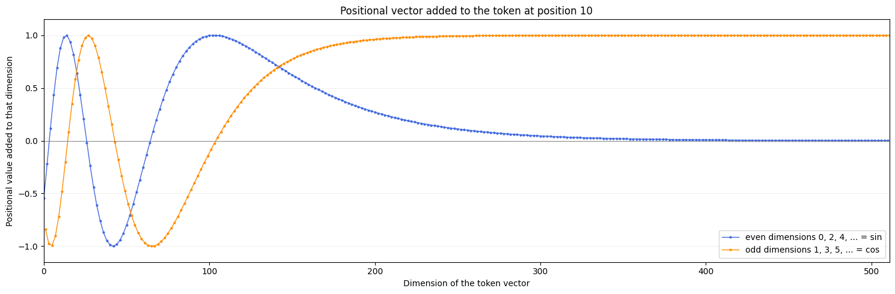

위치 번호와 차원별 주기로 값을 계산합니다. 위치 벡터는 학습 파라미터가 아니며 기존 코드에서는 register_buffer로 보관합니다.
Cell 02
순서가 없는 Transformer에 위치 알려주기
PositionalEncoding은 토큰 임베딩과 같은 d_model차원의 위치 벡터를 만든 뒤 더합니다. 각 차원에는 서로 다른 주기의 사인·코사인 파동을 사용하여 같은 토큰이라도 문장 속 위치가 다르면 다른 입력 표현을 갖게 합니다.
핵심 직관: 위치마다 다른 파형 패턴을 더한다
네가 말한 것처럼 포지셔널 인코딩은 각 토큰의 임베딩에 사인·코사인 패턴을 더해서 위치를 표현합니다. 다만 정확히는 토큰마다 다른 파형이 아니라 위치마다 다른 파형입니다.
position 0
Embedding("나는") + PE[0]position 1
Embedding("학교에") + PE[1]position 2
Embedding("갔다") + PE[2]각 위치 벡터 PE[p]는 차원마다 다른 속도의 sin·cos 값을 갖습니다. 따라서 최종 입력은 다음처럼 의미와 위치가 섞인 벡터가 됩니다.
X'[p] = E[token_p] + PE[p]
토큰 의미 벡터 + 위치 패턴 벡터

위치를 알 수 있는 이유 — 같은 토큰이라도 position 0과 position 1에서는 서로 다른
PE가 더해집니다. 모델은 이 위치별 패턴을 입력 벡터에서 읽어 토큰의 순서와 위치를 구분할 수 있습니다. 서로 다른 토큰이 같은 위치에 놓이면 같은 PE를 더받고, 토큰의 의미 벡터만 달라집니다.positional_encoding.pyPyTorch
class PositionalEncoding(nn.Module):
def __init__(self, d_model, max_seq_len=5000, dropout=0.1):
super().__init__()
self.dropout = nn.Dropout(p=dropout)
position = torch.arange(
start=0,
end=max_seq_len,
dtype=torch.float,
).unsqueeze(1)
div_term = torch.exp(
torch.arange(0, d_model, 2, dtype=torch.float)
* (-math.log(10000.0) / d_model)
)
pe = torch.zeros(max_seq_len, d_model)
pe[:, 0::2] = torch.sin(position * div_term)
pe[:, 1::2] = torch.cos(position * div_term)
pe = pe.unsqueeze(0)
self.register_buffer("pe", pe)
def forward(self, x):
x = x + self.pe[:, :x.size(1), :]
return self.dropout(x)
1. Position
문장 안의 위치 번호 생성
[S, 1]
2. Frequency
차원별 변화 속도 생성
[D/2]
3. Sin / Cos
짝수·홀수 차원에 교차 배치
[S, D]
4. Add
토큰 임베딩에 위치 정보 추가
[B, S, D]
Tiny Decoder LM에서 학습형 Position Embedding을 더해 보기
기존 문서의 PositionalEncoding은 위치 벡터를 sin·cos 공식으로 미리 만드는 방식입니다. Tiny Decoder LM의 독립 실행 셀에서는 위치 번호도 Token ID처럼 nn.Embedding 표에서 조회하는 학습형 Position Embedding 방식을 확인했습니다.
Position ID lookupvocab 10 · max sequence 8 · d_model 2
input_tokens = torch.tensor([[
3, 7, 2,
]])
positions = torch.tensor([[
0, 1, 2,
]])
token_embedding = nn.Embedding(
num_embeddings=10,
embedding_dim=2,
)
position_embedding = nn.Embedding(
num_embeddings=8,
embedding_dim=2,
)
token_vectors = token_embedding(input_tokens)
position_vectors = position_embedding(positions)
hidden_states = token_vectors + position_vectorsToken ID
input_tokens [[3,7,2]] · Shape [1,3]Position ID
positions [[0,1,2]] · Shape [1,3]Token vector
Shape [1,3,2]Position vector
Shape [1,3,2]원소별 합
hidden_states · Shape [1,3,2]이 Shape을 사용자가 설명한 말로 읽으면 “1시퀀스, 3토큰, 각 토큰은 2차원”입니다. Token vector와 Position vector는 모두 같은 위치에 같은 길이 2의 벡터를 가지므로, 위치별·차원별로 대응하는 원소끼리 더할 수 있습니다.
hidden_states[batch, position, dimension]
= token_vectors[batch, position, dimension]
+ position_vectors[batch, position, dimension]
position 0의 실행 예:
[2.2463, 1.8304] + [0.5573, -1.8208]
≈ [2.8036, 0.0096]위치 0의 벡터는 위치 0끼리, 위치 1은 위치 1끼리, 위치 2는 위치 2끼리 더합니다. Token 3개를 서로 합치거나, Position vector를 새 축으로 이어 붙이는 연산이 아닙니다. 그래서 두 입력과 합의 Shape이 모두 [1,3,2]로 유지됩니다.
nn.Embedding(max_seq_len, d_model)의 각 행을 위치 벡터로 사용합니다. 위치 0·1·2가 행 index이며, 이 표의 값은 Loss의 Gradient로 학습됩니다.
num_embeddings, embedding_dim, std는 서로 다른 값이다
embedding_dim은 초기 랜덤값의 표준편차가 아니라, 조회표에서 벡터 하나가 가진 원소 수입니다. 행·열·초기값의 퍼짐을 분리하면 다음과 같습니다.
num_embeddings
저장할 벡터 수이며 weight의 행 수입니다. 입력 index 하나가 이 행들 중 하나를 선택합니다.
embedding_dim
벡터 하나의 원소 수이며 weight의 열 수입니다. 조회 결과의 마지막 차원 크기를 정합니다.
std
각 원소를 초기화할 때 랜덤값이 평균 주변에 얼마나 퍼질지를 정합니다. 행·열 Shape과 별개이며 nn.init.normal_ 같은 초기화에서 따로 설정합니다.
position_embedding = nn.Embedding(
num_embeddings=8,
embedding_dim=2,
)
position_embedding.weight.shape = [8, 2]
↑ ↑
위치 벡터 8개 각 벡터의 원소 2개
positions = [[0, 1, 2]]
→ weight의 0번, 1번, 2번 행을 조회
사용 가능한 위치 행 = 0, 1, 2, 3, 4, 5, 6, 7
# 특정 표준편차로 초기화하려면 별도 설정
nn.init.normal_(
position_embedding.weight,
mean=0.0,
std=원하는_퍼짐,
)nn.Embedding은 Token과 Position의 의미를 스스로 구분하지 않는다 — 두 모듈은 모두 입력 index로 weight의 행을 조회합니다. Token ID를 넣고 단어 표현으로 사용하면 Token Embedding이고, 위치 index를 넣고 Token vector에 더하면 Position Embedding입니다. 역할은 클래스 이름이 아니라 어떤 index를 입력하고 결과를 어디에 사용하는지가 정합니다.두 방식의 공통점과 경계 — 위치 벡터를 만드는 방법은 다르지만, 둘 다 현재 Token vector와 같은
[batch, seq_len, d_model] Shape으로 맞춘 뒤 원소별로 더합니다. 오늘 확인한 것은 학습형 Position Embedding을 독립 셀에서 더해 Shape과 값을 검증한 단계이며, Tiny Decoder LM 전체 연결·학습·생성 완료를 뜻하지 않습니다.div_term이 차원별 속도를 만든다
같은 위치라도 모든 차원이 같은 각도로 움직이면 서로 다른 위치를 오래 구분하기 어렵다. div_term은 차원 쌍마다 다른 회전 속도를 만들어 빠른 변화와 느린 변화를 한 벡터에 함께 담는다.
sin·cos 쌍이 위치를 좌표로 바꾼다
짝수·홀수 차원 한 쌍은 같은 각도의 sin과 cos를 담아 원 위의 한 점처럼 움직인다. 여러 속도의 차원 쌍이 합쳐지면 위치마다 다른 벡터 지문이 생긴다.
Positional Encoding 텐서 Shape
| 대상 | Shape | 의미 |
|---|---|---|
position | [max_seq_len, 1] | 각 행에 위치 번호 하나 |
div_term | [d_model/2] | 차원 쌍마다 하나의 변화 비율 |
position * div_term | [max_seq_len, d_model/2] | 브로드캐스팅으로 만든 위치별·차원별 각도 |
pe | [1, max_seq_len, d_model] | 배치 전체가 공유할 위치 인코딩 |
x | [batch_size, seq_len, d_model] | 토큰 임베딩과 위치 인코딩을 더한 결과 |
unsqueeze(1)
위치 벡터를 [S]에서 [S,1]로 바꿔 [D/2]인 div_term과 브로드캐스팅되게 합니다.
pe[:, 0::2] / pe[:, 1::2]
짝수 차원에는 sin, 홀수 차원에는 cos 값을 교차해서 넣습니다.
register_buffer("pe", pe)
pe는 학습 파라미터는 아니지만 모델과 함께 장치를 이동하고 저장되도록 buffer로 등록합니다.
self.pe[:, :x.size(1), :]
미리 만든 최대 길이 중 현재 입력의 seq_len만큼만 잘라 토큰 임베딩에 더합니다.
구현 조건 — 현재
sin/cos 슬라이스 구현은 d_model이 짝수라고 가정합니다. 일반적인 Transformer 설정은 짝수 차원을 사용합니다.Positional Encoding 확인 문제
div_term이 차원이 커질수록 작아지는 이유는?
뒤쪽 차원의 사인·코사인이 위치에 따라 더 천천히 변하게 하여 긴 주기의 위치 패턴을 표현하기 위해서입니다.
d_model=8일 때 div_term의 원소 개수는?
차원을 두 개씩 한 쌍으로 처리하므로 4개입니다. 대략 [1, 0.1, 0.01, 0.001]입니다.
position * div_term이 가능한 이유는?
[S,1]과 [D/2]가 브로드캐스팅되어 [S,D/2]가 되기 때문입니다.